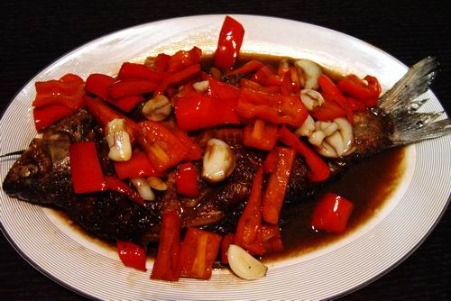
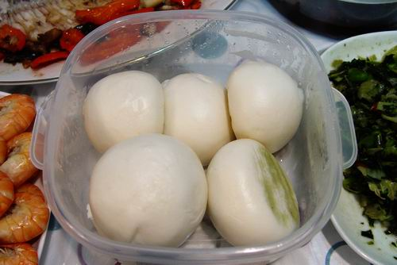
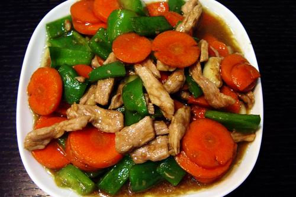

~~-红烧鳊鱼~~

-四季豆炒肉丝
~~-五香鸡翅~~
-我最偏爱盐水烹饪的罗氏虾
~~-奶油馒头~~

-糖醋排骨
~~-胡萝卜、肉丝炒青椒~~

-鲜笋、小蘑菇炖小母鸡
~~-雪菜毛豆~~
-妈妈给我的长围裙 —油烟酱醋的生活并不容易，偶尔为之尚有几分乐趣，不过菜烧好之后我已没有胃口享用......
555 看着美食的心情就不必说了，从今天开始忌口，变的好馋闹，自己都没想到:mrgreen:
:arrow:弓虽口阿！
温柔的手下次也借我摸摸:wink:
:mrgreen:色香味俱全，菜品是，伊人更是。
哎呀。。。。鱼。。。。太喜欢了
好粗的肉丝啊 :mrgreen:
能把我的连接做上么？ 我是http://www.icebin.net的！！
嗯，希望以后的我也能像你一样。一个精致又贤惠的老婆。
太浪费了 两个人吃这么多 有老婆真烦 一做菜就做这么多 又放了那么多酱油 虾子又炒得不红 馒头又冷冰冰的 有老婆真烦
sorry, i don't think the meal is prepared by you. How much do you buy from restaurant?:evil:
TO:楼上的true girl 你是不是在夸偶烧的菜和饭店差不多啊？多谢了！ 听说台湾的男人好色，台湾的女人多疑，果真如此。 您要是妒忌，直接说，别客气。
真是秀色可餐~看了,我都要流口水了:razz: 看了就想到妈妈做的菜。让人感到真亲切呀。5年了没有吃过妈妈做的菜了。Christina越来越优秀了。你老公真幸福~
其實啊，吃飯的時候，要脫了圍裙，不然有做菜的味道，而且影響氣氛的。 做完菜，最好洗完臉，再回到飯桌前。深呼吸一下，享用一頓美餐~~~~
吃飯的時候，你的身份不是一個廚師，而且最好忘了它，而是美麗可愛的情人。這是兩個人的浪漫晚餐，哈哈。
菜的味道偏重，不過北方是這種口味的了。
:shock:两个人的分量？
流口水ing... 呵呵，喜欢做完饭等他回来吃的期待。可惜我的手艺也只有他会说好吃了：）
存档只读，评论已关闭。
Name (required)
Email (will not be published) (required)
Website
« 重阳节态度 | 第四次见面 »


16 Responses to “我做的晚餐*o*”
2004-10-25
555 看着美食的心情就不必说了，从今天开始忌口，变的好馋闹，自己都没想到:mrgreen:
2004-10-25
:arrow:弓虽口阿！
2004-10-25
温柔的手下次也借我摸摸:wink:
2004-10-26
:mrgreen:色香味俱全，菜品是，伊人更是。
2004-10-26
哎呀。。。。鱼。。。。太喜欢了
2004-10-26
好粗的肉丝啊 :mrgreen:
2004-10-26
能把我的连接做上么？ 我是http://www.icebin.net的！！
2004-10-26
嗯，希望以后的我也能像你一样。一个精致又贤惠的老婆。
2004-10-28
太浪费了
两个人吃这么多
有老婆真烦
一做菜就做这么多
又放了那么多酱油
虾子又炒得不红
馒头又冷冰冰的
有老婆真烦
2004-10-28
sorry, i don't think the meal is prepared by you.
How much do you buy from restaurant?:evil:
2004-10-28
TO:楼上的true girl
你是不是在夸偶烧的菜和饭店差不多啊？多谢了！
听说台湾的男人好色，台湾的女人多疑，果真如此。
您要是妒忌，直接说，别客气。
2004-10-28
真是秀色可餐~看了,我都要流口水了:razz: 看了就想到妈妈做的菜。让人感到真亲切呀。5年了没有吃过妈妈做的菜了。Christina越来越优秀了。你老公真幸福~
2004-10-28
其實啊，吃飯的時候，要脫了圍裙，不然有做菜的味道，而且影響氣氛的。
做完菜，最好洗完臉，再回到飯桌前。深呼吸一下，享用一頓美餐~~~~
吃飯的時候，你的身份不是一個廚師，而且最好忘了它，而是美麗可愛的情人。這是兩個人的浪漫晚餐，哈哈。
菜的味道偏重，不過北方是這種口味的了。
2004-10-28
其實啊，吃飯的時候，要脫了圍裙，不然有做菜的味道，而且影響氣氛的。
做完菜，最好洗完臉，再回到飯桌前。深呼吸一下，享用一頓美餐~~~~
吃飯的時候，你的身份不是一個廚師，而且最好忘了它，而是美麗可愛的情人。這是兩個人的浪漫晚餐，哈哈。
菜的味道偏重，不過北方是這種口味的了。
2004-10-28
:shock:两个人的分量？
2004-10-28
流口水ing... 呵呵，喜欢做完饭等他回来吃的期待。可惜我的手艺也只有他会说好吃了：）
Leave A Reply
存档只读，评论已关闭。